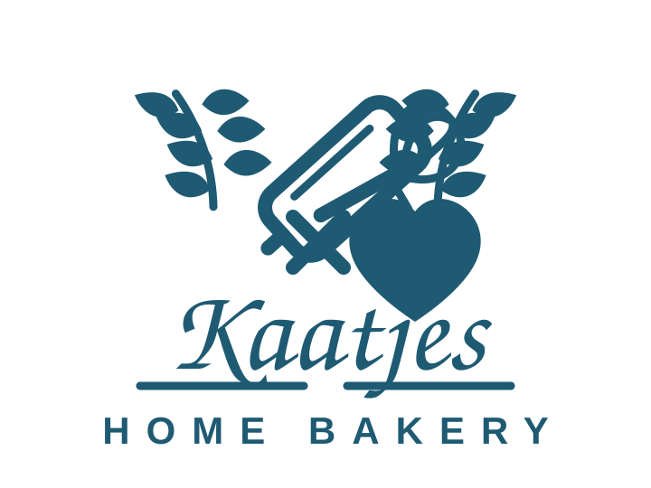
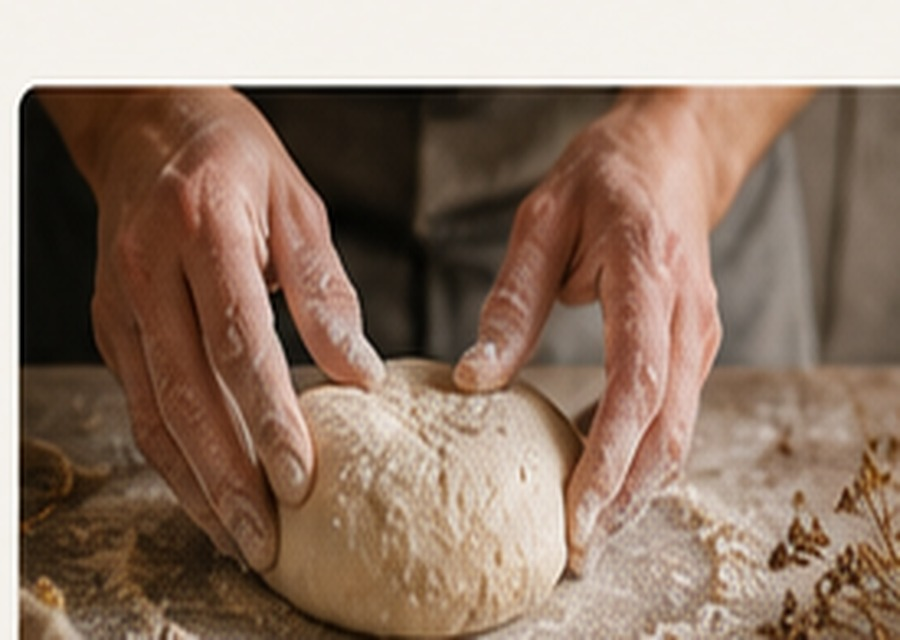

Blog
Waarom brood tijd nodig heeft
Goed brood ontstaat niet door haast, maar door rust.

Blog
Goed brood ontstaat niet door haast, maar door rust.

Een lange rijstijd zorgt ervoor dat het deeg smaak ontwikkelt. De korst wordt voller, de kruim wordt zachter en het brood krijgt meer karakter.
Bij Kaatjes Home Bakery bakken we daarom in kleine hoeveelheden en nemen we de tijd voor elk deeg.